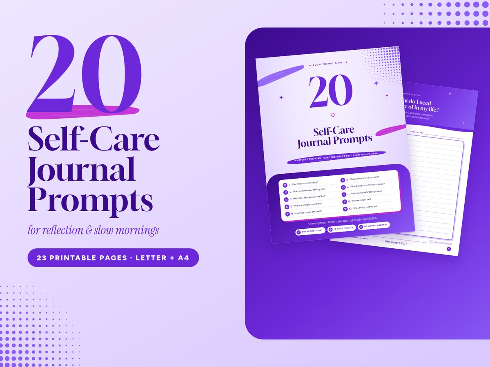

20 Self-Care Journal Prompts: slow down, one page at a time
Each prompt gets a full page with a gentle nudge to get started. From small joys to bigger questions.

$4
Get it for $4 on Gumroad →23 printable pages · Instant digital download · US Letter + A4 PDF · Made by Glow Theory & Co.
Why this exists
A blank page is hard to start
"Just journal" is tough advice when you stare at empty lines. Each page has one clear prompt and a short nudge, so you always know where to begin.
Prompt lists online give you no room
Most free prompt lists are a single page of 50 questions. Here every prompt gets its own page and full writing area.
Journaling turns into a chore
Twenty prompts is a realistic number: one a day for three weeks, or one every Sunday for a few months.
How to start journaling for self-care
You do not need to write well
Journaling for self-care is not writing for an audience. Spelling, grammar and neat handwriting do not matter. The point is to notice what you think and feel, and to give it somewhere to go.
Use one prompt, not a blank page
A blank page invites overthinking. One clear question, like "What made me smile today?" or "What do I need more of?", gives your mind a place to start. Answer it honestly, even if the answer is short.
Set a small, regular time
Ten minutes is enough. Pick a time you already have, like morning coffee, a lunch break or Sunday evening. Consistency matters more than length.
Start light, go deeper later
Begin with gentle prompts about small joys and gratitude. As journaling becomes a habit, move to bigger questions about boundaries, values and what you want next. That gradual shift makes the deeper prompts feel less heavy.
Close with one word
Ending each entry with one word for the day helps you see patterns over weeks: calm, tired, hopeful, scattered. Looking back at those words is often surprisingly useful.
Know its limits
Journaling can help you reflect and process everyday feelings. It is not a replacement for professional support. If something you write about feels too heavy to carry alone, please reach out to someone you trust or a professional.
What's inside
- 20 prompt pages, one prompt per page, with a date and "today I feel" line
- A short nudge under each prompt and a "one word for today" line
- Prompts from "What made me smile today?" to "What is my next chapter asking of me?"
- A gratitude page: 30 little things I'm grateful for, plus a person and a place
- A closing reflection page
How to use it
- Pick a time. Morning coffee or Sunday reset both work.
- One prompt only. Write for 10 minutes. No wrong answers.
- Close with one word. Write one word for today at the bottom.
- Finish with gratitude. After the 20 prompts, fill the gratitude and reflection pages.
How it compares
| Option | What it covers | Structure | Catch |
|---|---|---|---|
| Free prompt list | 50 questions on one page | No space | Hard to use |
| Guided journal book | Fixed bound pages | Yes | Cannot reprint |
| 20 Self-Care Prompts | One prompt per page | Full page each | Printable, reprint favourites |
What you'll like
- One prompt per page with lots of writing space
- Gentle nudges make it easier to start
- Reprint favourite prompts any time
- Lowest price in the shop, a good first purchase
Honest catches
- 20 prompts, not 365
- You print it yourself
- Reflection, not a substitute for professional support
FAQ
Can I reprint pages?
Yes, for yourself and your household.
What sizes?
US Letter and A4.
Is it therapy?
No. These prompts are for personal reflection and are not a substitute for professional mental-health support.
Which prompts are included?
Examples: What made me smile today? What do I need more of in my life? What boundaries do I need to set? What does rest look like for me?
No reviews or results are claimed on this page. Personal use only; please don't resell or share the files. This is a planning tool, not medical, financial or mental-health advice.
 Free Self-Care Checklist
Free Self-Care Checklist The Ultimate Glow Theory Self-Care Bundle
The Ultimate Glow Theory Self-Care Bundle